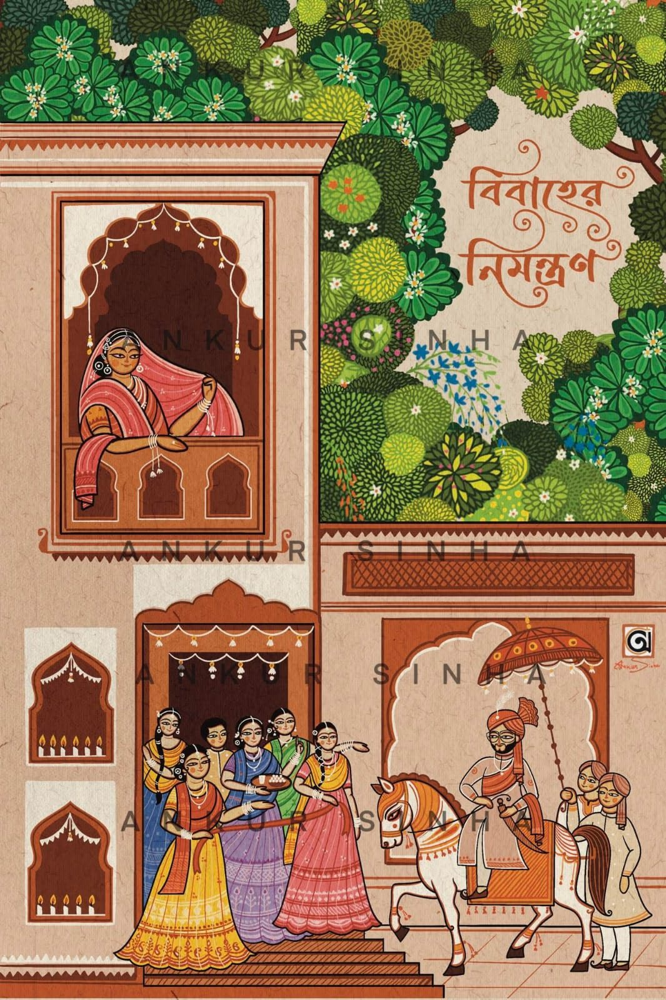
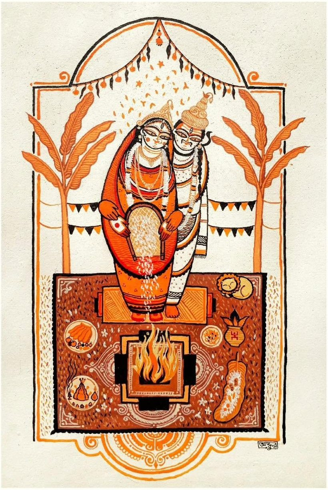

বনশ্রী ও মিলনের শুভ বিবাহ
আপনাদের সকলকে সাদরে নিমন্ত্রণ
পাত্রী
কল্যাণীয়া
বনশ্রী দত্ত
পিতা – শ্রী স্বপন কুমার দত্ত
মাতা – শ্রীমতী মিঠু দত্ত
গ্রাম – বরকামতা, দেবিদ্বার, কুমিল্লা
শোনো শোনো সুধীজন, শোনো দিয়া মন।
শুভ এক পরিণয় বার্তা করি নিবেদন॥
কুমিল্লা জেলার মাঝে দেবিদ্বার ধাম।
বরকামতা গ্রামখানি অতি অভিরাম॥
শ্রীযুক্ত স্বপন কুমার দত্ত মহাশয়।
শ্রীমতী মিঠু দত্ত সহধর্মিণী হয়॥
তাঁহাদের আদরের কন্যা গুণবতী।
বনশ্রী নাম তাঁর, যেন লক্ষ্মী সরস্বতী॥
বগুড়ার শেরপুরে বাঘমারা গাঁয়।
শ্রীযুক্ত অজয় চন্দ্র মাহাতো বসত করে তায়॥
শ্রীমতী ভারতী রানী মাতা স্নেহময়ী।
পুত্র তাঁদের মিলন, সুশীল বিনয়ী॥
অগ্রহায়ণের আট তারিখ শুভক্ষণে।
বনশ্রী মিলনেরে বরিবে মালা-বরণে॥
চার হাত এক হবে অগ্নি সাক্ষী রাখি।
সাত পাকে বাঁধা হবে জনমের সাথী॥
বিবাহ উপলক্ষে তাই জানাই নিমন্ত্রণ।
সবান্ধবে বিবাহ আসরে করো আগমন॥
ধান দূর্বা হাতে লয়ে আশিস করিও।
পত্র দ্বারা নিমন্ত্রণের ত্রুটি না ধরিও॥
॥ শ্রী শ্রী প্রজাপতয়ে নমঃ ॥
পাত্র
কল্যাণীয়
মিলন মাহাতো
পিতা – শ্রী অজয় চন্দ্র মাহাতো
মাতা – শ্রীমতী ভারতী রানী
ঠিকানা – বাঘমারা, শেরপুর, বগুড়া
স্মারকলিপি
শুভ বিবাহ
৮ই অগ্রহায়ণ, ১৪৩৩
(ইং ২৫শে নভেম্বর, ২০২৬), বুধবার
লগ্ন: রাত্রি ১১টা ২৬ মিনিট হতে রাত্রি ৩টা
আপ্যায়ন: সন্ধ্যা ৮টা হতে
বিবাহ বাসর: দেশপ্রিয় সেন্টার,
লাকসাম রোড, কুমিল্লা
বৌভাত
১১ই অগ্রহায়ণ, ১৪৩৩
(ইং ২৮শে নভেম্বর, ২০২৬), শনিবার
প্রীতিভোজ: দুপুর ১২টা হতে
স্থান: পাত্রের নিজ পিত্রালয়
বাঘমারা, শেরপুর, বগুড়া

আপনার সবান্ধব উপস্থিতি ও আশীর্বাদ
নবদম্পতির নতুন জীবনের পাথেয়
বিনীত
দত্ত ও মাহাতো পরিবার
শুভ বিবাহ · ৮ই অগ্রহায়ণ ১৪৩৩